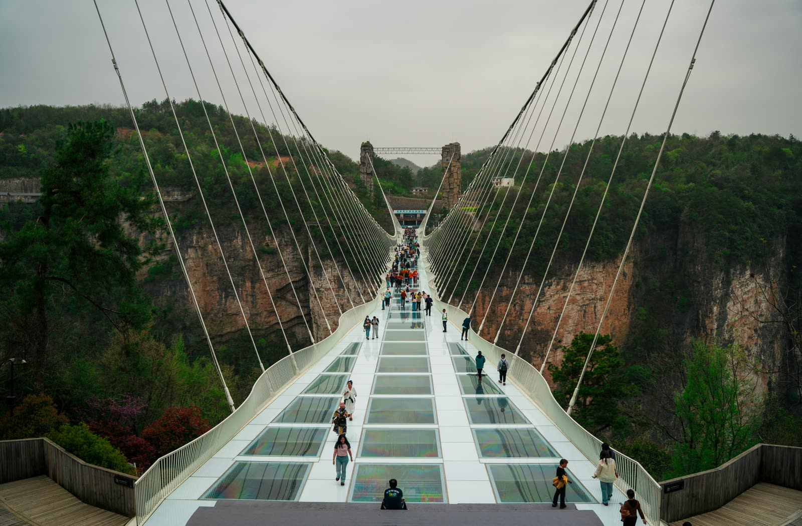
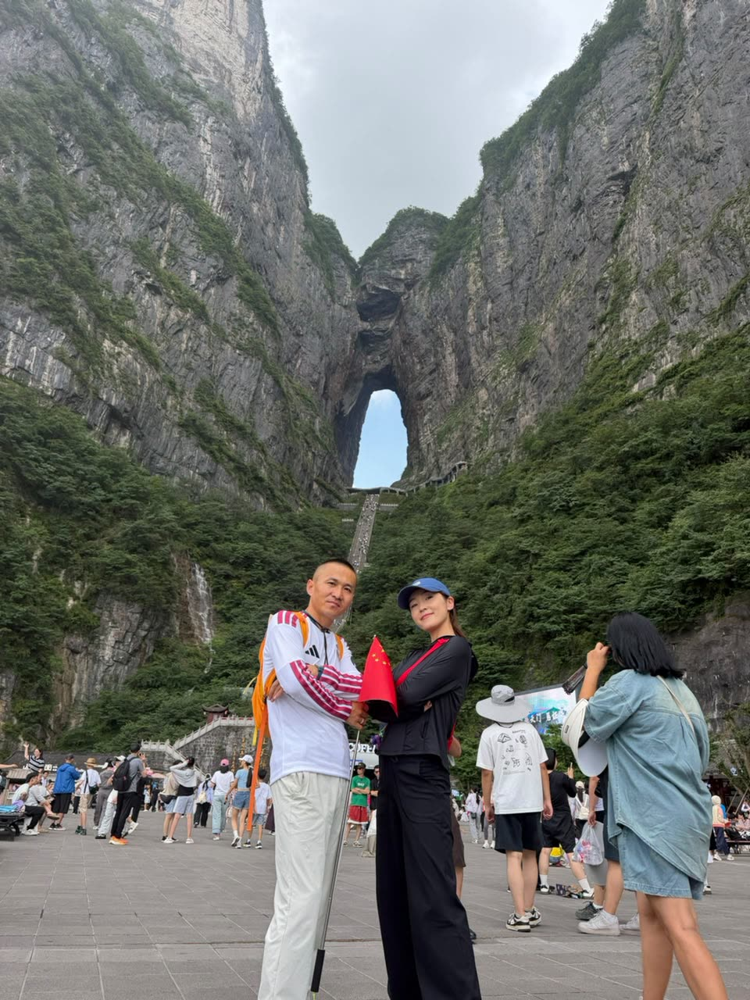
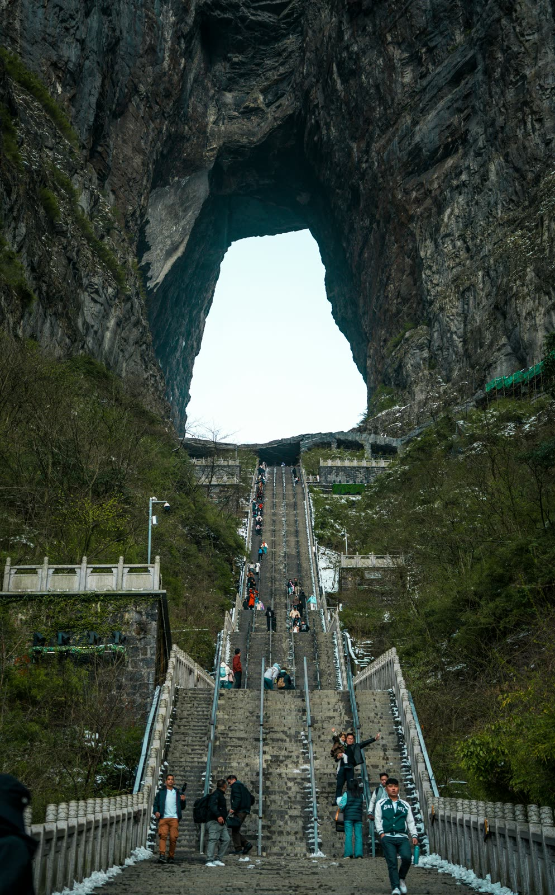
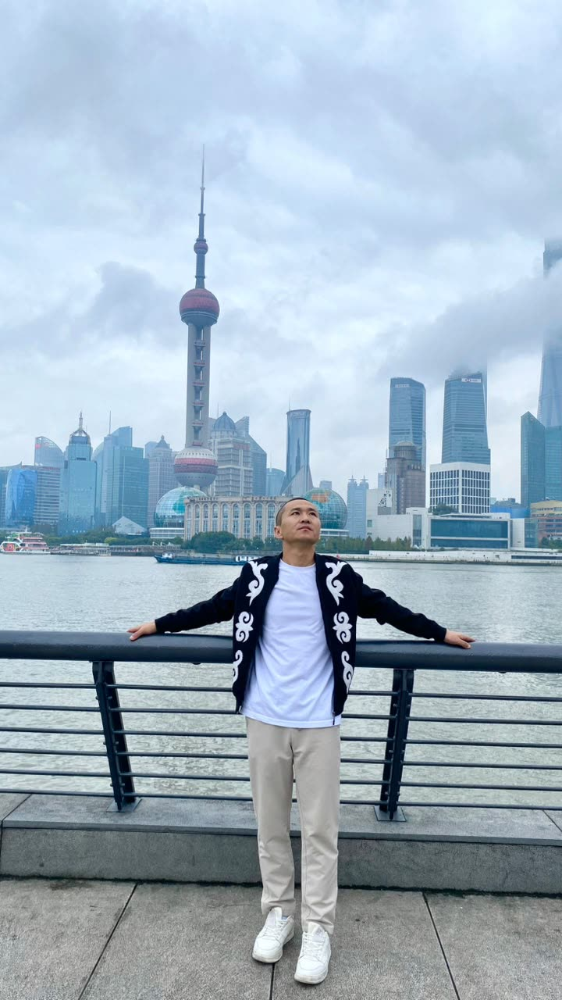
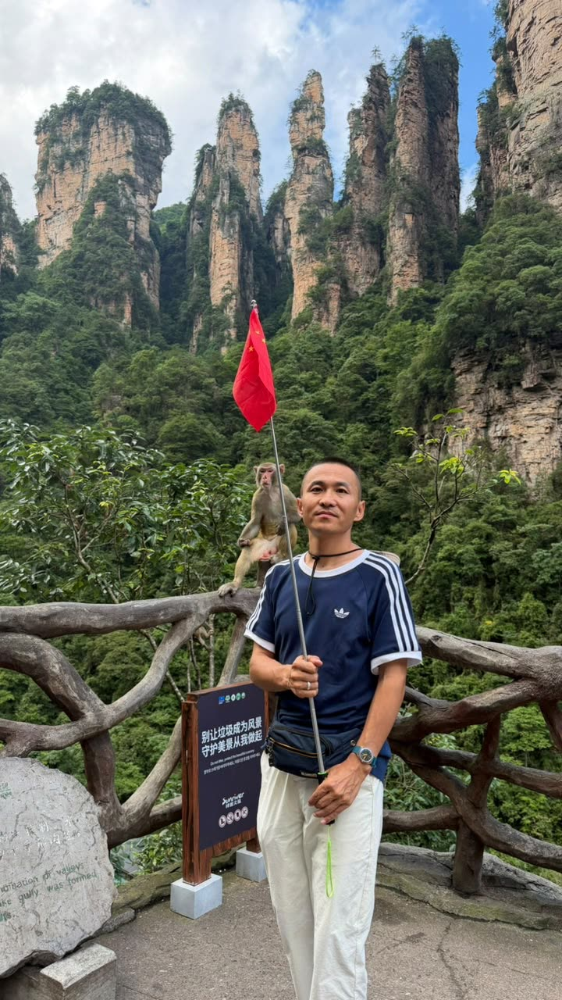
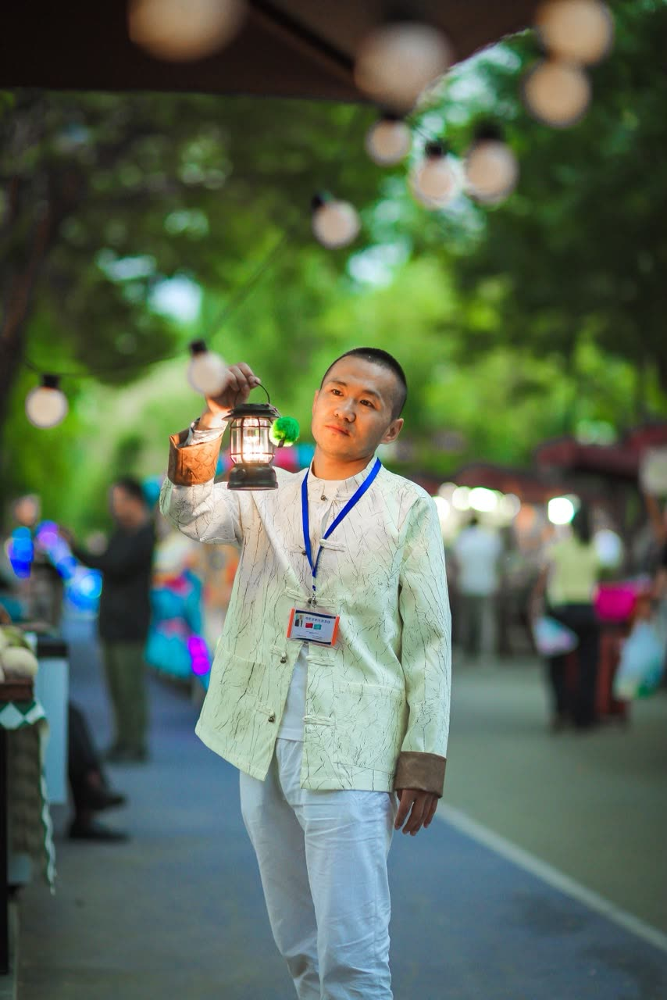
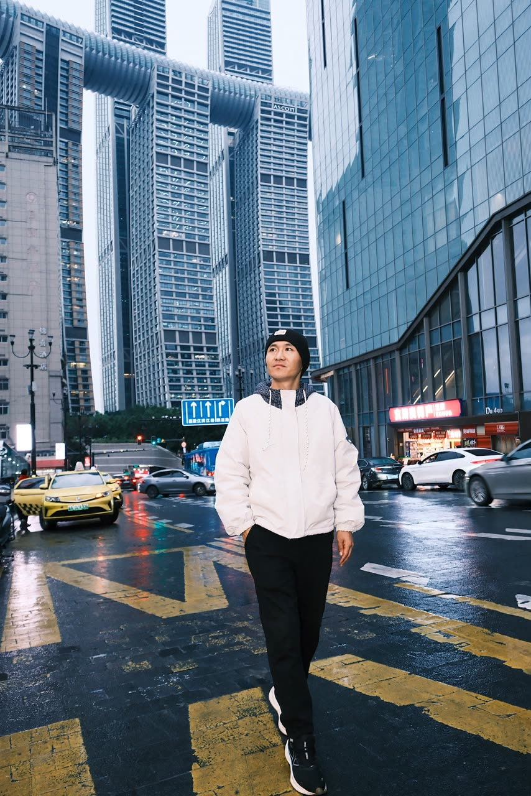
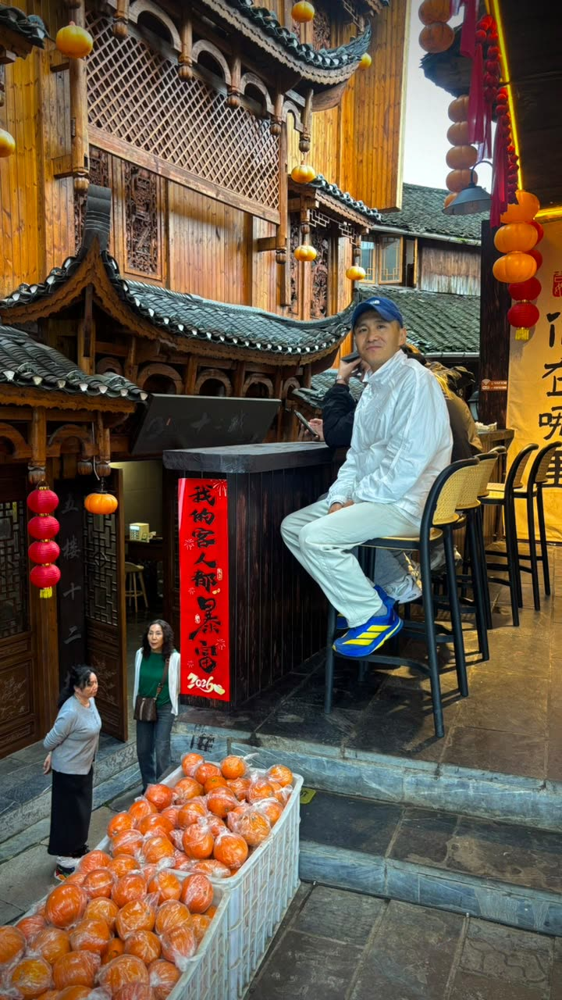

Флагман турҚЫТАЙҒА САЯХАТ
Quan Travel — Қазақстаннан Қытайдың кез келген қаласына қазақ тілінде сөйлейтін жеке гид-аудармашымен сенімді саяхат. Аудармашы, гид және бағдарлама — бір қолда.
Бағдарламалар
Әр саяхат жеке жасалады — сондықтан бағаны WhatsApp арқылы дәл сұрап алыңыз.

Флагман тур



87 600+
Instagram жазылушысы · Meta Verified
Артықшылықтар
Сапалы қызмет пен жеке көзқарас — саяхатыңыздың әр қадамын бірге сүйемелдейміз.
87 600+
Instagram жазылушы
7
Тікелей бағыт
1
Жеке гид-аудармашы, делдалсыз
24/7
WhatsApp қолдауы
◆ Тәжірибе
Тау шыңдары ғана емес — дәстүрлі шай рәсімі, түнгі базарлар мен қала ырғағы.
Дәстүрлі шай рәсімі

Түнгі базар сәттері

Мегаполис ырғағы

Ежелгі көшелер мен фонарлар
Негізін қалаушы
Мен — Куанмын, Қытай тілінде сөйлейтін аудармашы-гидмін. Instagram-дағы @quan_travel_ парақшасы арқылы Қазақстаннан Қытайға саяхаттаған 87 600-ден астам жазылушыдан тұратын қоғамдастықты біріктірдім.
Әр сапарда сізбен жеке өзім — делдалсыз, аудармашысыз шатасусыз. Аудармашы, гид, логистика және бағдарлама — бір қолда, бір адамда.
«Әр қазақ — менің жалғызым»Instagram-да қадағалау — @quan_travel_
Әлеуметтік дәлел
Объектив арқылы
Қозғалыста
Сұрақ-жауап
Сапарыңызды жоспарлау алдында туындайтын ең жиі сұрақтарға жауап дайындадық. Жауабын таппасаңыз — WhatsApp арқылы тікелей сұраңыз.
Соңғы жылдары Қазақстан азаматтары үшін Қытайға қысқа мерзімді туристік сапарларда визасыз кіру мүмкіндігі қолданыста. Дегенмен ережелер жиі жаңартылып тұрады, сондықтан дәл ағымдағы талаптарды және қажет құжаттар тізімін сапар алдында WhatsApp арқылы бізден жеке растап алыңыз.
Әр бағдарлама жеке жасалатындықтан, құрамы да әр түрлі болуы мүмкін. Әдетте гид-аудармашы қызметі, бағдарламаны жоспарлау және сапар барысындағы толық сүйемелдеу кіреді. Авиабилет, қонақүй және кіру билеттері сияқты бөлшектер жеке ұсыныс дайындау кезінде бірге талқыланады.
Жеке турда бағдарлама толығымен сізге және жақындарыңызға бейімделеді — уақыт кестесі мен бағыттарды өзгертуге болады. Топтық турда басқа саяхатшылармен бірге, алдын ала белгіленген бағдарлама бойынша жүресіз. Екеуінде де гид-аудармашы қызметі бірдей деңгейде қамтамасыз етіледі.
Жоқ. Quan Travel-дың негізгі ерекшелігі — саяхат бойы сізбен бірге жүретін қазақ тілінде сөйлейтін жеке гид-аудармашы. Дүкенде, мейрамханада, көлікте — барлық жерде тілдік кедергі болмайды.
WhatsApp арқылы хабарласыңыз — қалаған бағыт пен болжамды күндерді айтыңыз, біз соған сай жеке бағдарлама мен бағаны ұсынамыз. Барлық сұрақтар мен келісім тікелей жеке байланыс арқылы шешіледі.
Төлем шарттары әр бағдарламаға байланысты жеке анықталады. Дәл шарттарды бағдарламаны келісу барысында WhatsApp-та бірге талқылаймыз.
Иә. Қытай — инфрақұрылымы дамыған, қылмыс деңгейі төмен елдердің бірі. Оған қоса, сіз бүкіл сапар бойы жалғыз емессіз — жергілікті жағдайды жақсы білетін гид үнемі қасыңызда болады немесе байланыста болады.
Бұл таңдаған бағытыңызға байланысты. Мысалы, Чжанцзяцзе тауларына көктем мен күз ерекше әдемі — ауа райы жайлы, тау шыңдары бұлт арасынан анық көрінеді. Нақты бағытыңызға сай ең қолайлы мезгілді таңдауға көмектесеміз.
Маманымыз сізге ең қолайлы турды таңдауға көмектеседі — тек хабарласыңыз.